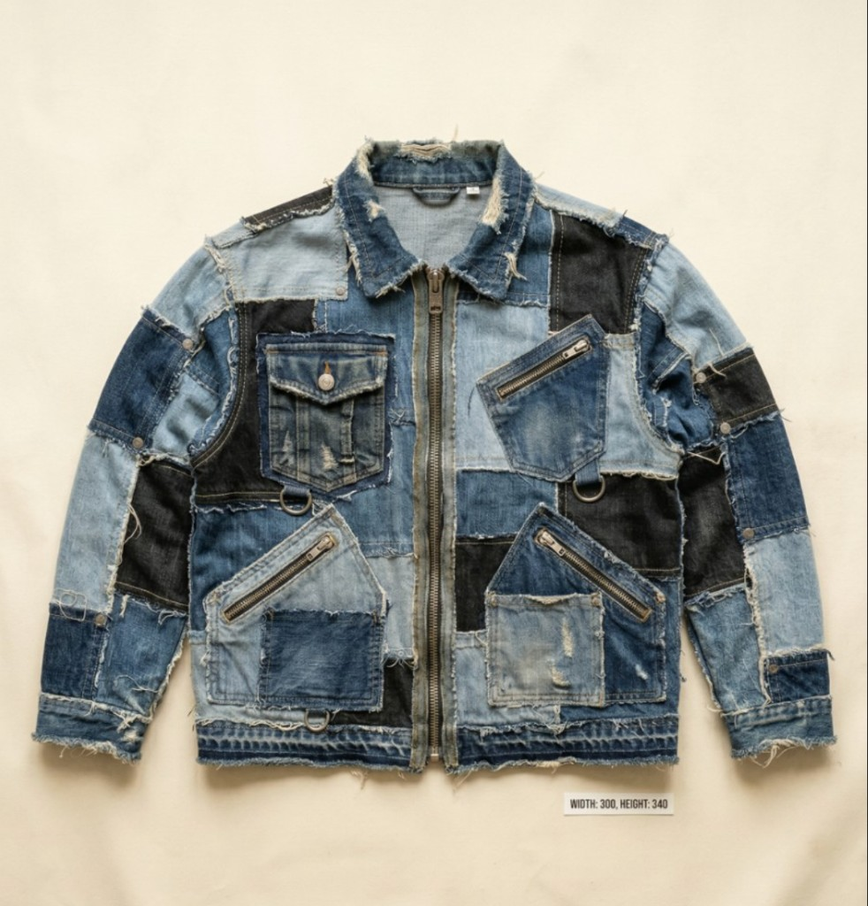
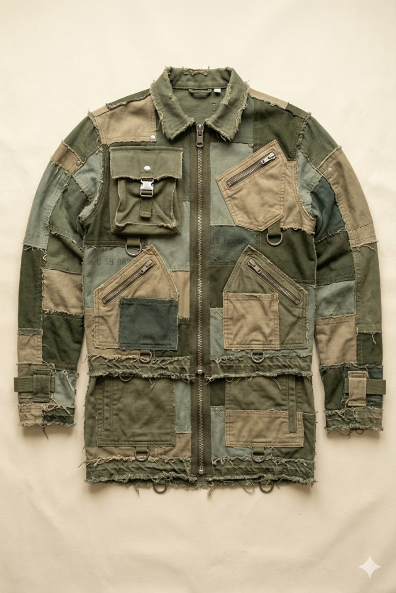
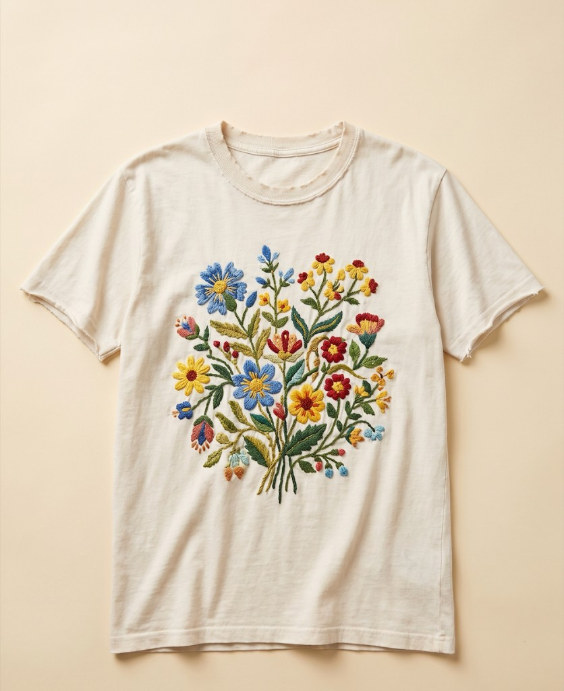
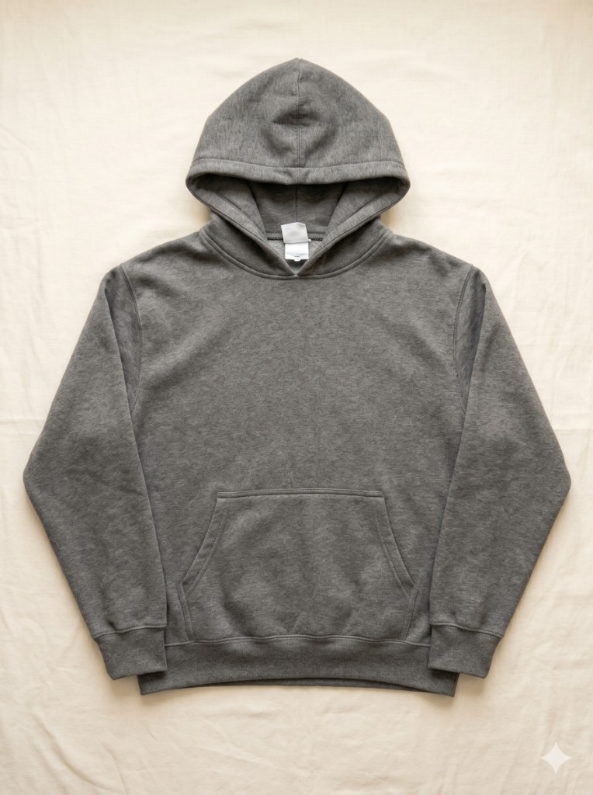
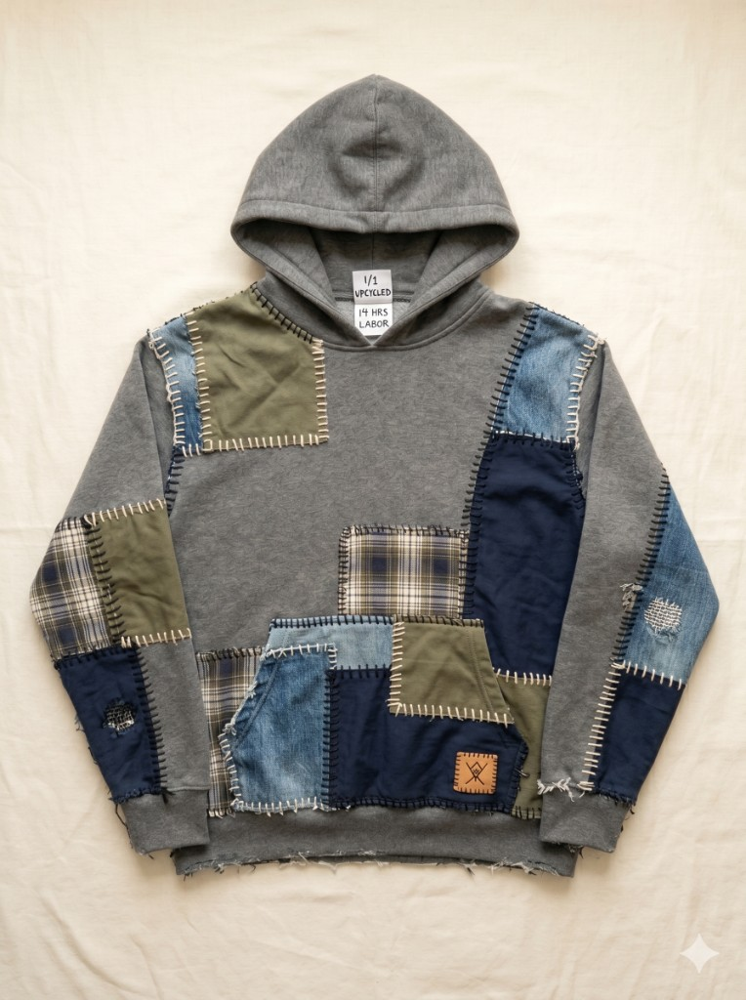

Story Tag Verified ✓
Upcycling Artist @ The Prison Thread Initiative
Hey everyone! My name is David and I'm from New York City!
I've always been someone who takes things apart to see how they work, but for a long time, my life lacked focus. Learning industrial sewing gave me a quiet space to finally channel my energy. My style (heavy patchwork, raw edges, and utilitarian cuts) is inspired by the idea that even discarded, frayed things can be rebuilt into something strong and purposeful. I love taking mass-produced corporate waste and giving it a completely unique, human soul.
Every piece is 1-of-1. Every stitch tells a story.

Re-worked Denim
Patchwork jacket, 1 of 1

Cropped Utility Jacket
Military surplus remake

Embroidered Tee
Hand-stitched floral motif
Corporate deadstock in. 1-of-1 wearable art out.

Before
Mass-Produced Hoodie

After
David's 1-of-1 Patchwork Hoodie
Every garment is high-end craft, not factory output.
14 Hours
of dedicated labor
Custom Patchwork
multi-fabric panels
Deconstructed Seams
raw-edge finishing
Hand-Embroidered
signature thread work
100% transparent. Every dollar builds a future.
Base Pay: State Minimum Wage / Hour
Every participant earns at least their state's minimum wage for every hour worked.
On top of base pay, profits from each garment sold are split three ways:
Direct to the Maker
Goes directly back to the incarcerated artist as profit from their work.
Government Program Fund
Goes back to the government to fund and sustain the program — covering facilities, materials, and administration.
Community Organizers & Distributors
Supports the community organizers who curate, photograph, distribute, and sell each piece.
Story Tag Scanned
You scanned a tag and found David. Every garment carries the maker's story.
About the Initiative
We believe that nothing, and no one, is disposable. The Prison Thread Initiative is a closed-loop ecosystem designed to solve two massive problems: the environmental crisis of fast-fashion waste, and the lack of rehabilitative opportunities in our prison system.
We partner with major clothing brands to legally divert their unsold, mass-produced deadstock away from landfills. Instead of being shredded, these garments are shipped directly to our secure, warden-approved workshops inside prisons. There, incarcerated individuals undergo rigorous training in tailoring, design, and supply chain management. They take this corporate waste and completely upcycle it into 1-of-1 wearable art.
This program is entirely voluntary and focuses on humanization and skill-building. Our artists earn a base pay of at least their state's minimum wage for every hour worked. On top of that, profits from each garment sold are split between the government to sustain the program, the community organizers and distributors who bring each piece to market, and the incarcerated artist themselves.
When you buy a Prison Thread garment and scan its Story Tag, you are not just buying a unique piece of sustainable fashion. You are funding a second chance, destroying the anonymity of the supply chain, and proving that both clothes and people deserve a chance to be rewritten.